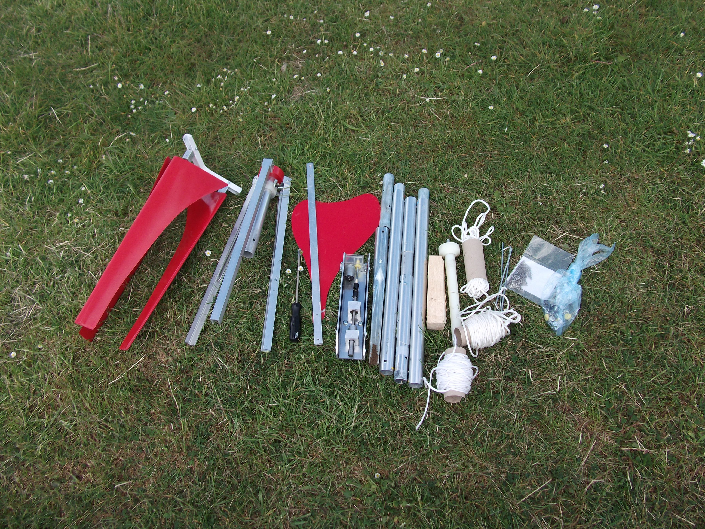
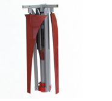
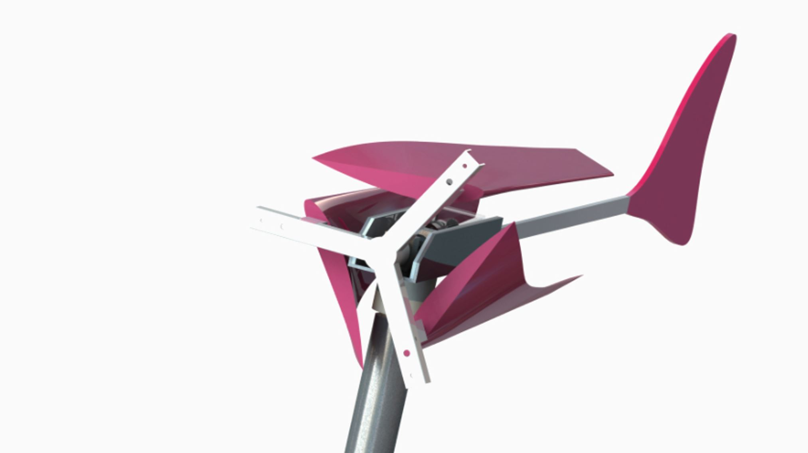

My first hardware venture, at university. I designed, built and tested a portable wind turbine for expeditions, camping and off-grid use, wrote the business plan and won £5,000 across the Da Vinci (£3,000) and Spark (£2,000) innovation awards.

My first go at building a business from hardware, and the first time I went out to raise money. It also showed me I was missing the commercial side, so I went to the Alacrity Foundation and co-founded Volunteer Space to learn it.
Portable power for expeditions, camping and off-grid use. Carried and put up by one person, generating up to 500W in 13 m/s wind.



After the awards I looked hard at the market and stopped there. It wasn't big enough to build a venture-scale company on.